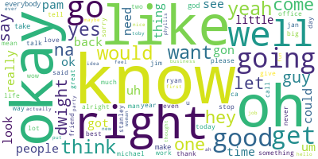

Who Drives The Office? Word Counts Over Seasons
Michael talks twice as much as the other characters.
What are Michaels most frequent words?
Michael's 100 most frequently used words are not that interesting, although Ryan and Dwight make the cut.
Michael's 100 most important words according to TFIDF
The tfidf algorithm ranks words highly that are unique to Michael's vocabulary. Or words that Michael says a lot and the other characters do not.
This algorithm works good when your corpus has a shared vocabulary, like characters in a tv show who all work in the same office.
If you look closely you can see some references to classic episodes,
like rabies, roasted, and dundies. But Michael's girl friends top the list, followed by Ryan.
Code
View the Python code on my github
https://github.com/dan-dewitz/the_office_area_plot